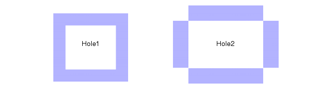

Holes
Layer operation
Constructs a derived polygon layer of polygons that fit inside of holes in polygons from the input layer.
Usage
HOLES layer [constraint] [INNER] [EMPTY] [SINGULAR ALSO]
Arguments
- layer
An original layer or layer set, or a derived polygon layer.
- constraint
One of the constraints listed in the “Constraint Notation” column of Table 1 in the “Constraints” topic. This constraint limits hole selection to those whose area in user units squared satisfies the constraint.
- INNER
Optional keyword that prevents holes containing other holes from being output.
- EMPTY
Optional keyword that prevents output of holes that are Not Outside a layer polygon.
- SINGULAR ALSO
Optional keyword specifying that the edges surrounding the hole are not required to come from the same polygon. Point-to-point and point-to-edge contacts, sometimes referred to as singularities, are considered when selecting shapes comprising a hole.
Description
Forms a layer consisting of all polygons that fit exactly inside of layer polygon holes.
The tool divides a merged polygon into one or more non-intersecting cycles of vertices. The cycle containing the right-most vertex is called the exterior cycle. All other cycles are called interior cycles. (See Donut for a complete description of cycles.) A polygon with only an exterior cycle has no holes. Otherwise, the polygon has interior cycles and, therefore, holes. The following figure shows the two kinds of cycles.
If you specify a constraint, it acts as an area filter. Holes are output if their areas in square user units meet the constraint.
Here are the possible behaviors for this operation:
HOLES layer [constraint]:
Find unmerged holes.
Test the area of the unmerged holes against the constraint, if specified, and filter those whose area does not satisfy the constraint.
Merge results from step b.
For example, notice that holes within holes are merged in the following figure. This is the default behavior:
Figure 2. Holes metalHoles layer should be used with care as it produces merged output. Specifically, holes within holes are merged away. This can lead to unexpected results. Other keywords allow selection of nested holes.
If a constraint is used, then holes are selected by area prior to merging the output. For example, if a hole has area 10 and it lies within another hole of area 100, then a constraint of “< 20” would output the smaller hole. The unconstrained Holes operation would output the larger hole because the smaller hole would be merged away.
HOLES layer INNER [constraint]:
Find unmerged holes.
Filter out unmerged holes that contain any other unmerged holes. The results from this step are merged by definition.
Test the area of the results from step b against the constraint, if specified, and filter those whose area does not satisfy the constraint.
For example, notice in the following figure that only the innermost hole is merged and output. INNER finds the innermost hole that lies within other holes:
Figure 3. Holes metal INNERThe INNER keyword allows selection of holes not containing other holes before any layer merging occurs. This is useful in isolating metal slots, for example.
HOLES layer EMPTY [constraint]:
Find unmerged holes.
Merge them.
Filter output from step b which is Not Outside the input layer.
Test the area of the results from step c against the constraint, if specified, and filter out those whose area does not satisfy the constraint.
For example, initially the EMPTY keyword creates a merged hole like Figure 2. However, this result is Not Outside the metal layer, so the initial result is filtered and there is no output. EMPTY outputs holes that have no polygons from the input layer lying inside the holes:
Figure 4. Holes metal EMPTYThe EMPTY keyword is rarely used.
HOLES layer INNER EMPTY [constraint]:
Find unmerged holes.
Filter unmerged holes which contain any other unmerged holes. The results from this step are merged by definition.
Filter output from step b that is Not Outside the input layer.
Test the area of the results from step c against the constraint, if specified, and filter those whose area does not satisfy the constraint.
For example, initially this keyword set creates a merged hole like Figure 3. However, this result is Not Outside the metal layer, so the initial result is filtered out and there is no output:
Figure 5. Holes metal INNER EMPTY
The INNER EMPTY combination may be useful in certain metal slot rules.
HOLES layer SINGULAR ALSO [constraint]:
The SINGULAR ALSO keyword allows for the selection of disparate polygons that form holes.
Find unmerged holes.
Merge the results.
Test the area of the merged holes against the constraint, if specified, and filter those whose area does not satisfy the constraint.
For example, if SINGULAR ALSO is specified both Hole1 and Hole2 shown in the following figure are selected by the Holes operation. If SINGULAR ALSO is not specified, only Hole1 is selected.
Figure 6. Holes With and Without SINGULAR ALSONote that even when there are no singularities on the input layer, the following two operations do not give the same result.
HOLES layer constraint
HOLES layer constraint SINGULAR ALSO
This is because when SINGULAR ALSO is specified, the constraint is applied after merging; whereas, when SINGULAR ALSO is not specified, the constraint is applied before the holes are merged. There are no discrepancies when the INNER keyword is used in these operations.
Layers having holes that would disappear by oversizing the layer by 4 dbu may be missed by SINGULAR ALSO. These layers should be checked by a minimum spacing rule.
Examples
Example 1
// Select all contacts that are exactly in a hole of diffusion:
X = HOLES diff // First find diffusion holes
Y = X INSIDE contact
// Next pick contacts in the holes
contacts_in_holes = contact INSIDE YExample 2
If a hole of area 10 is within another hole of area 100, then this operation:
HOLES layer < 20outputs only the smaller hole. The unconstrained Holes operation would output only the larger hole since the smaller hole would be merged away. (The selection by constrained area occurs before merging.) The INNER keyword can be useful in these situations.
Example 3
The constrained Holes operation is valuable for performing enclosed area checks. For example, if the enclosed area of metal must be greater than 2, then this operation:
HOLES metal < 2is generally more efficient (and more accurate) than this one:
AREA ( ( EXTENT ) NOT metal ) < 2and is correct as long as a hole of larger dimension cannot contain a shape which removes enough of the hole to generate an error. This is generally the case with most processes.